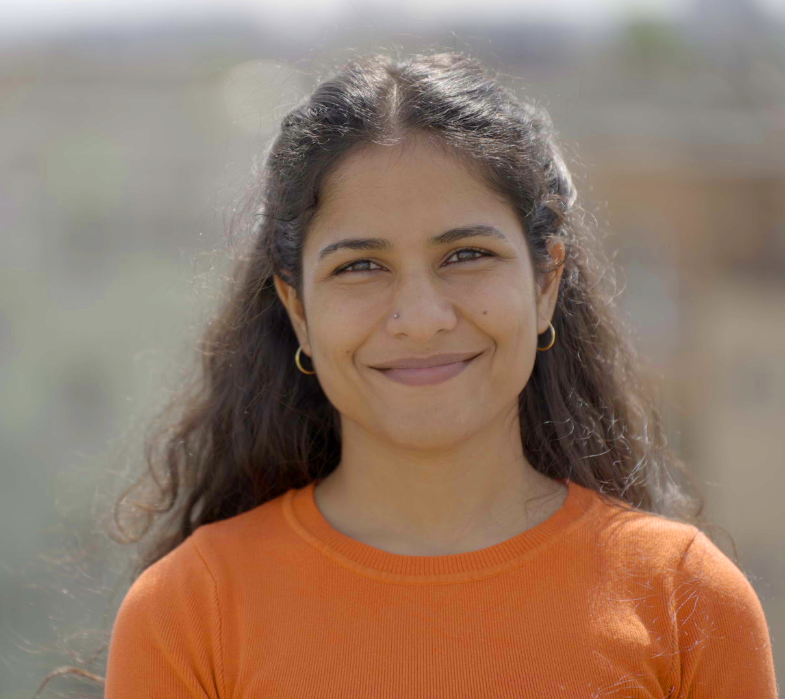

About Me
I’m a postdoctoral researcher in the Schaffer Lab at the Icahn School of Medicine at Mount Sinai. My research focuses on understanding how neural circuits learn and adapt in complex, dynamic settings. I combine machine learning, theoretical neuroscience, and reinforcement learning principles to investigate biologically plausible learning rules in recurrent networks.
Download CV